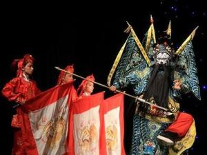

川剧唱腔
 川剧由昆曲、高腔、胡琴、弹戏、灯调五种声腔组成。其中，除灯调系源于本土外，其余均由外地传入。这五种声腔和为五种声腔伴奏的锣鼓、唢呐曲牌以及琴、笛曲谱等音乐形式。川剧音乐博采众长，兼收并蓄，她囊括吸收了全国戏曲各大声腔体系的营养，与四川的地方语言、声韵、音乐融汇结合，衍变形成为形式多样、曲牌丰富、结构严谨、风格迥异的地方戏曲音乐。
高腔
高腔是川剧中最重要的一种声腔，是明末清初从外地传入四川。高腔传入四川以后，结合了四川方言、民间歌谣、劳动号子、发间说唱等形式，几经加工和提炼，逐步形成了具有地方特色的声腔音乐。
川剧高腔是曲牌体音乐，川剧高腔曲牌数量众多，形式复杂。它的结构基本上可以概括为：起腔、立柱、唱腔、扫尾。高腔剧目多、题材广、适应多种文词格式。高腔最主要的特点是没有乐器伴奏的干唱即所谓"一唱众和"的徒歌形式，它以帮打唱为一体。锣鼓的曲牌都是以这种方式组成的。有的曲牌帮腔多于唱腔，有的基本全部都是帮腔，有的曲牌只在首尾两句有帮腔，其具体形式是由戏决定的。
川剧高腔保留了南曲和北曲的优秀传统，它兼有高亢激越和婉转抒情的唱腔曲调。
昆腔
昆腔多文人之作，词白典雅，格律规严，演唱时特别讲究字正腔圆，加之曲牌曲折，节奏缓慢，如今已渐衰微。川昆源于苏昆，川剧艺人利用了昆曲长于歌唱和利于舞蹈的特点，往往只选取昆曲中某些曲牌或唱句，插入其它声腔中演唱，形成了川昆独具姿色的艺术风格。。
川剧昆腔的曲牌结构与它的母体"苏昆"基本相同。应用时有"单支"和"成堂"两种形式。目前，以昆腔单一的声腔形式演出的剧目已经不多了，更多的是溶于高腔、胡琴、弹戏诸声腔之中，或者是与其它声腔共和。
昆腔的主奏乐器是笛子。伴奏锣鼓及方式与其余高、胡、弹、灯诸声腔相同，以大锣敲边和苏钹二件乐器的特殊单色构成锣鼓的"苏味"来区别于其它声腔的锣鼓伴奏。
胡琴
胡琴是二黄与西皮腔的统称。因其主要伴奏乐器是"小胡琴"，故统称胡琴。《燕兰小谱》卷五记载："蜀伶新出琴腔，……其器不用笙笛，以胡琴为主，月琴应之，工尺咿唔如话"，可以说是四川胡琴腔的注脚。胡琴腔约在乾隆年间就已经形成了。
二黄包括正调（二黄）、阴调（反二黄）、老调三类基本腔。正调善于表现深沉、严肃、委婉和轻快的情绪；反二黄宜表现苍凉、凄苦、悲愤的情绪；老调则大多用于高亢、激昂的情绪。西皮腔与二黄腔的音乐性格相反，具有明朗、潇洒、激越、简练、流畅的品格。西皮、二黄多为单独使用，但也有不少剧目同时包纳二种声腔。
弹戏
川剧弹戏是用盖板胡琴为主要伴奏乐器演唱的一种戏曲声腔。它源自陕西的秦腔，属梆子系统，因此又有"川梆子"之称。弹戏虽源于秦腔，但它同四川地方语言结合，并受四川锣鼓和民间音乐的影响，经过长期的衍变，无论曲调、唱法还是唱腔结构都与秦腔有所不同，形成了自己独特的艺术风格，具有浓郁的四川地方色彩。尽管二者的关系不是相当接近，但从从曲调结构，调式特点，以及整个唱腔的韵味等方面分析，均可找到它们之间的渊源。
弹戏包括情绪完全不同的两类曲调：一类是长于表现喜的感情的叫"甜平"（又称"甜品"、"甜皮"、"甜腔"），一类叫"苦平"（又称"苦品"、"苦皮"），则善于表现悲的感情。它们具有相对的独立性，但它们的调式、板别、结构都是相同的，甚至在同一板别的唱腔中，曲调的骨架都一样。
灯调
灯戏在在川剧中颇有特色，它源于四川民间的迎神赛社时的歌舞表演，也可以说是古代巴蜀传统灯会的产物。所演为生活小戏，所唱为民歌小调，村坊小曲，体现了当地浓烈的生活气息。
灯戏声腔的特点是：乐曲短小，节奏鲜明，轻松活泼，旋律明快，具有浓厚的四川地方风味。
灯调声腔主要由"胖筒筒"、发间小曲和"神歌腔"组成。灯戏伴奏的"胖筒筒"，是一种比二胡杆粗、筒身大、声音略带"嗡"声的琴。
【角色】
川剧分小生、旦角、生角、花脸、丑角5个行当，各行当均有自成体系的功法程序，尤以文生、小丑、旦角的表演最具特色，在戏剧表现手法、表演技法方面多有卓越创造，能充分体现中国戏曲虚实相生、遗形写意的美学特色。
【乐器】
昆腔多文人之作，词白典雅，格律规严，演唱时特别讲究字正腔圆，加之曲牌曲折，节奏缓慢，如今已渐衰微。川昆源于苏昆，川剧艺人利用了昆曲长于歌唱和利于舞蹈的特点，往往只选取昆曲中某些曲牌或唱句，插入其它声腔中演唱，形成了川昆独具姿色的艺术风格。
川戏锣鼓，是川剧音乐的重要组成部分。其使用乐器共有二十多种，常用的可简为小鼓、堂鼓、大锣、大钹、小锣（兼铰子），统称为“五方”，加上弦乐、唢呐为六方，由小鼓指挥。这是去农村演出的轻便乐队。锣鼓曲牌有三百支左右。“装龙象龙，装虎象虎”，这一句形容和要求川剧表演的话，在川剧演员中代代相传。川剧表演具有深厚的现实主义传统，同时又运用大量的艺术夸张手法，表演真实、细腻、优美动人。